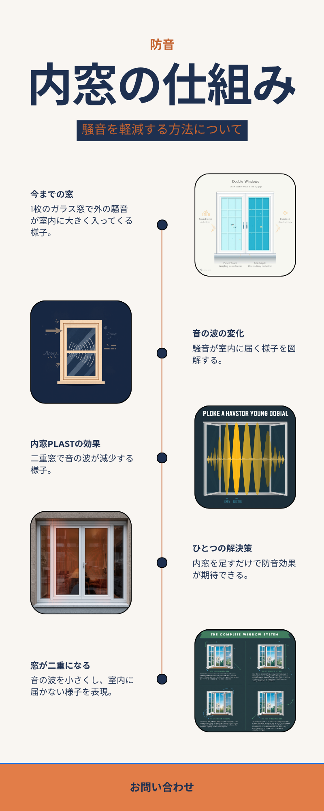
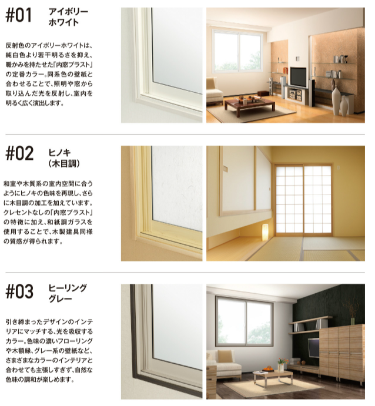
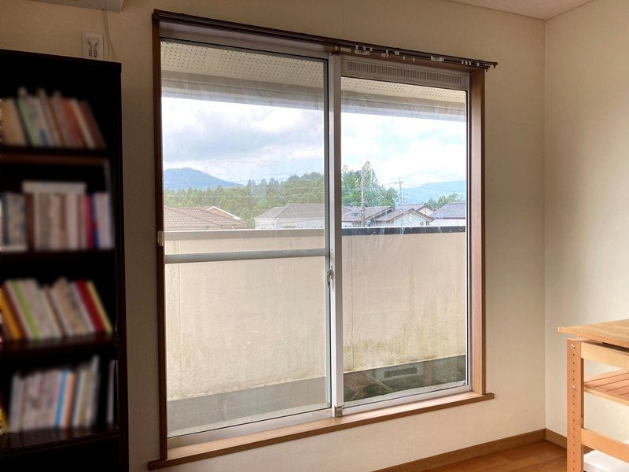
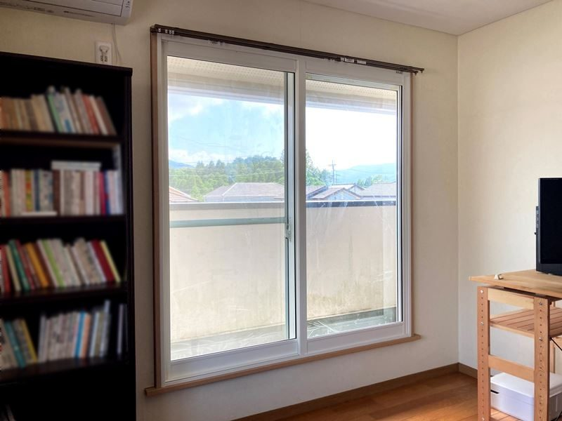

この記事の内容（タップで開く）
こんな夜を過ごしていませんか
真夜中、うとうとしかけたところに大きな車が通る。目が開いてしまう。時計を見ると2時すぎ。また同じ時間だ。そう思いながら、もう一度寝つくまでに、けっこうな時間がかかる。
朝になれば忘れてしまう程度のことです。だから誰にも言わない。でも、こういう夜が週に何度もあると、体のどこかに疲れが残っていきます。
- 夜中に車の走行音で目が覚めてしまう
- 早朝、電車やバイクの音で起こされる
- 在宅ワークの会議に集中できない
- 幹線道路や線路が近く、窓を開けられない
- 自分の家の生活音が外に漏れていないか気になる
大声で困っていると言うほどではない。我慢できないわけでもない。けれど、地味に疲れる。その感覚に心当たりがあるなら、原因の多くは「窓」にあります。次は、なぜ音が窓から入ってくるのかをお話しします。
なぜ、音は窓から入るのか
家の中で、いちばん音が出入りしやすい場所が窓です。壁にはある程度の厚みがありますが、窓は一枚のガラスとサッシの隙間。ここから音の波がそのまま伝わってきます。とくに昔ながらのアルミサッシと単板ガラスの組み合わせは、外の音をほとんど素通しにしてしまいます。

逆にいえば、窓さえ対策すれば、音はかなり抑えられます。そして窓の対策で、いま現実的なのが内窓です。
内窓PLASTで変わること
内窓PLASTは、今ある窓の内側にもう一枚の窓を足す商品です。壁も床も壊しません。引っ越しも家具の大移動も要りません。多くのお宅は、その日のうちに取り付けが終わります。
主役の強み｜音を通しにくい構造
PLASTは窓枠まわりの隙間が小さい構造で、厚い防音ガラスと組み合わせると、音が通り抜けにくくなります。寒さと騒音の厳しい北海道・東北で、防音内窓として長く選ばれてきた製品です。私たちフクシマ建材は、九州での内窓施工に多くの実績があります。窓の防音を考えるときの目安として、音の伝わり方を整理してみます。
うれしい副産物｜冬の底冷えと結露もやわらぐ
窓を二重にすると断熱性も上がります。防音のために付けたら、冬の窓際の冷えがやわらいで、結露も出にくくなった。そういう方が多くいらっしゃいます。
うれしい副産物｜鍵のない、すっきりした佇まい
PLASTは鍵金具が目立たない、すっきりした見た目が特長です。カラーは3色。お部屋の雰囲気を損ないません。

施工事例
どのくらい静かになるのか、言葉より、現場で起きたことをお伝えするのが早いと思います。フクシマ建材で実際に施工した事例です。


踏切のそばのピアノ室に、内窓を一枚
家のすぐ近くに踏切があり、カンカンという警告音が室内まで響いていたお宅です。ピアノの練習部屋として使うため、外の音を抑えたいというご相談でした。内窓PLASTに防音合わせガラスを組み合わせて設置しました。
線路沿いのマンションで、今ある窓の内側に
熊本駅の近く、線路沿いのマンションにお住まいの方からのご相談でした。日中も夜も電車が通り、音が気になって落ち着かないとのこと。今ある窓の内側に内窓PLASTを設置しました。工事は短時間で完了しています。
このほかの事例も準備中です。あなたの窓に近い事例を、LINEでご紹介することもできます。
お客様の声
実際にお使いの方からいただいた声です。
すぐ近くに踏切があるのですが、カンカンという警告音がほとんど聞こえなくなりました。
ピアノ室の防音対策でご利用のお客様
取り付けた瞬間から、線路を走る電車の音がほとんど聞こえなくなりました。
熊本駅近くのマンションにお住まいのお客様
（お客様の声を追加収集中です）
いずれもお客様個人の感想です。効果には個人差があり、結果を保証するものではありません。掲載は許諾と日付を確認のうえ確定します。
フクシマ建材が選ばれる理由
壁も床も壊さず、多くのお宅でその日のうちに完了します。先進的窓リノベ2026などの補助金にも対応します。専門用語をかみくだいて、分かりやすく丁寧にご説明するのが私たちのやり方です。
数値は当社の施工実績の集計です。九州での実績数や順位などの比較表記は、調査の主体・範囲・時点を確認のうえ掲載します（裏取り中）。
費用と補助金のこと
PLASTは品質を重視した製品のため、他の内窓と比べると価格はやや高めです。そこは正直にお伝えします。そのうえで、補助金を使うと実際のご負担は下がります。
※ 税・工賃込みの目安です。窓が大きいほど、また防音合わせガラスなど仕様を上げるほど高くなり、窓の数でも変わります。後から想定外の費用が出ないよう、正確な金額はお見積もりでお出しします。
相談から施工までの流れ
LINEで写真を送る
気になる窓の写真を送ってください。入力フォームは不要です。
概算をお返事
写真をもとに、おおよその費用と効果の目安をお伝えします。
現地調査
ご希望があれば、実際の窓を見て正確なお見積もりをお出しします。
施工（2〜4時間）
壁も床も壊さず、その日のうちに取り付け完了。すぐに静かさを体感いただけます。
よくあるご質問
LINE登録すると、しつこく連絡が来ませんか
確認なくこちらからお電話することはありません。やり取りはLINEの中だけで、営業の連絡を重ねることもしません。合わないと感じたら、いつでもブロック・退会していただけます。まずは見るだけ、という方も歓迎です。
窓を2回開けるのは面倒ではありませんか
普段よく使う窓を中心にご提案します。慣れると気にならなくなる方が多いです。開け閉めの頻度もふまえてご相談に乗ります。
賃貸でも取り付けできますか
賃貸の場合はオーナー様の許可が必要です。原状回復のご相談にも対応しますので、まずはお気軽にお問い合わせください。
どのくらい静かになりますか
音の種類によって差はありますが、踏切の警告音や線路の電車の音がほとんど気にならなくなった事例があります。今の窓の状況を写真で見せていただければ、目安をお伝えします。
工事は何時間かかりますか
1窓あたりおよそ1時間です。多くのお宅は2〜4時間で完了します。大がかりな工事にはなりません。
補助金は使えますか
条件を満たせば対象になります。お住まいや窓の状況によって変わりますので、LINEで確認させてください。
見積もりは無料ですか。高い工事をすすめられませんか
お見積もりは無料です。ご予算やご希望をうかがったうえで、必要な分だけをご提案します。むやみに高い工事をおすすめすることはありません。費用の目安は、小さい窓で8〜12万円ほど（税・工賃込／窓のサイズで変わります）。くわしくはこの記事の費用と補助金のことにも載せています。
フクシマ建材について
窓・内窓・玄関ドアのリフォームを専門に、九州一円で施工しています。理念は、分かりやすく、丁寧に。お客様のお困りごとを、専門外の方にも伝わる言葉で解決することを大切にしています。
九州プラスト（フクシマ建材株式会社）
「もっと早く付ければよかった」。
施工のあとに、そう言っていただくことがあります。
うちの窓はどうだろう、という段階で大丈夫です。
写真を1枚送っていただくところから、はじめられます。